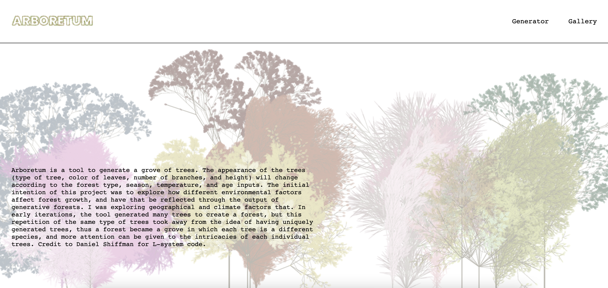
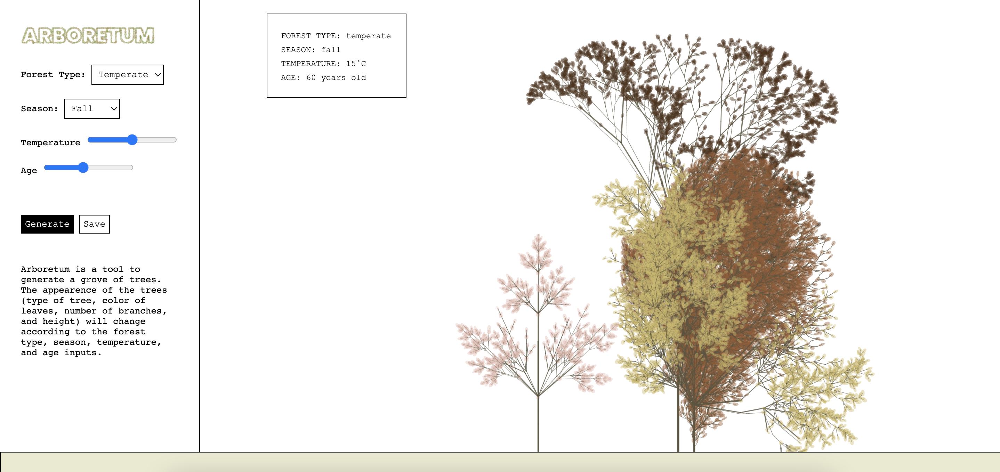
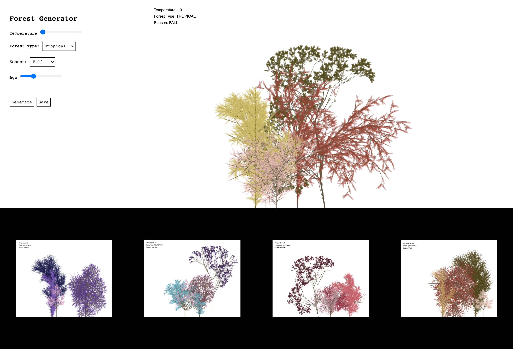
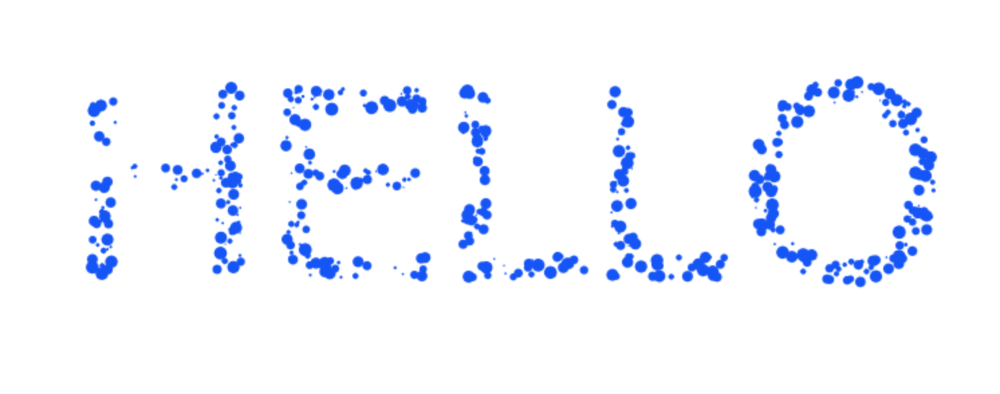
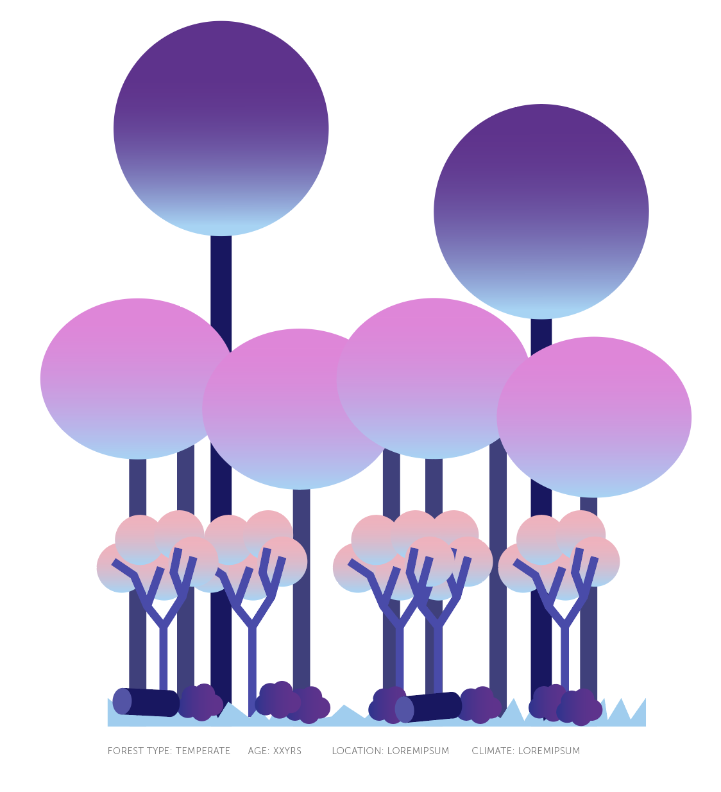
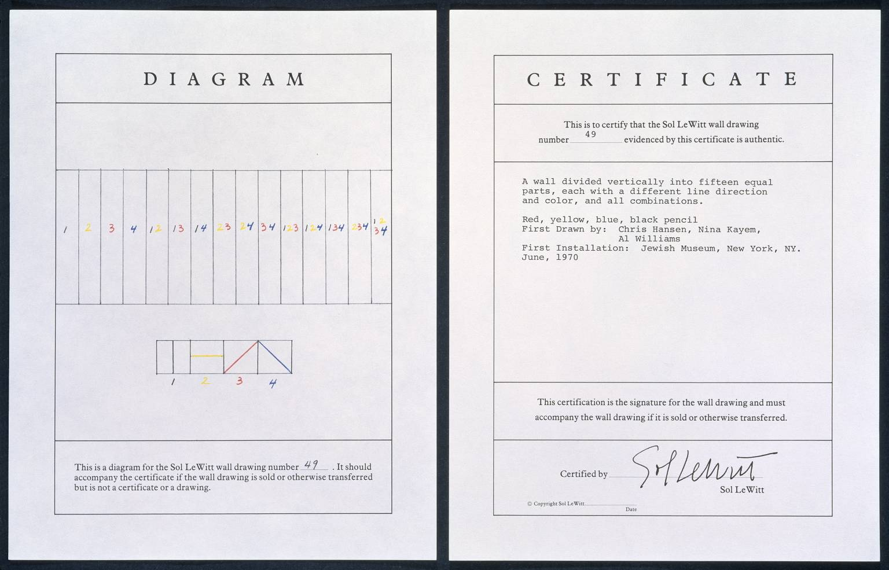
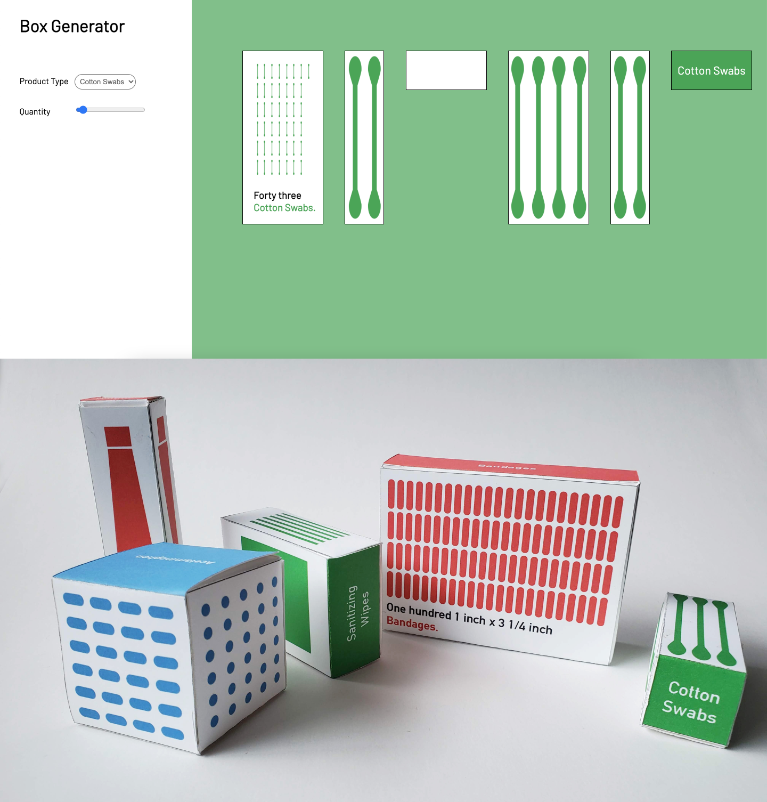

It is interesting what the reading says about generative art being different from any other traditional
art because of the lack of the human hand being involved in its creation. Because it is computed, it could never
represent anything real. This is confusing when it comes to things like my project, where I generate
something very real - trees, but can never claim to be real
My
website to hold my script and the outputs

I think as more of our current jobs fall subject to automation, new jobs will appear in places we didn't realize jobs could be,
and there will always be a need for human contribution for our society.
I made final touches to my
generator such as adding working inputs,
and a project description. Users can now use all the inputs to change the type of tree, color of leaves, number of branches, and height.
I also added a logo to tie it together.

I'm not sure that there will ever be a future where there are no jobs, and humans are just free to do whatever
they want. I think at the end of the day, there has to be someone maintaining the machines that are taking people's
jobs away. And even in this technology boom, there are still so many jobs out there. While some people's jobs
become automated, there are jobs opening up in other areas that couldn't have been there without the existence
of such technology.
I
worked on simplifying my forest to just a cluster of trees. I also
added a third forest type so that there can be more types of trees, and I adjusted the colors so they compliment
eachother better. Additionally, I started building the interface where the generator and outputs will live. I am
still working on the styling, but the structure is set.

I wonder what the author is alluding to when he talks about art as “material experience” rather than one object
of someone's property. I agree that if we stop viewing art as something someone owns, then it would be impossible to steal, but I'm
unsure about how that would manifest, like would the art be technically everyone's property, or is it something like conditional
design where people partake in the creation of the art so it becomes both the designers work and another person's.
I worked on having more variety between my outputs. I added random colors to my leaves. I also added more tree types, and
allowed for a random number of forest layers to be generated. I will start to play around more with branch color and thickness,
and tree variety to increase the variety between the outputs. See sample outputs below.
Here is my sketch.
Its interesting how the reading says that software is not stuck to existing in one form, because I always
thought about it as something stored in a computer and never seen physically. I would never think to print
out code for people to know of its existence, but what the reading says about just having it out there in
many forms makes sense to me. It kind of ties back to accessibility, because not everyone uses computers so
heavily, so having the software exist in other forms that those people might come across more will allow
them to become aware of the software too.
I found a bunch of resources on different trees that can be generated using L-systems and dumped them in
my
are.na channel.
For my
forest generator, I worked on incorporating a few different
tree types using L-systems, using the resources I found. I also started to incorporate leaves into the trees,
and randomizing the leaf colors (see sketch image below). For my metadata, I am thinking of including the following user inputs
to change the different tree variables:
- Age of forest → Heights of trees/ Number of trees
- Season → Color of leaves
- Forest type → Types of trees
- Temperature and precipitation → Number of layers/variety of trees
It is interesting what the reading says about the power of information play to simulate and predict
phenomena that even God could not predict, and can lead to new behaviors and events
I researched more about L-systems and the different types of trees I would be able to generate.
Links to resources I found are on my
are.na channel.
I also worked on building a tree using an L-system and randomizing the branching to make it look
more organic. I tried adding it to the forest sketch I had made previously, to see what it would
look like in the different layers of the forest. I also started adding user inputs, but haven't
linked their values to the generator yet. View my sketch
here
(it takes a long time to load the forest).
I resonated with the part where the reading talks about how some languages weren't designed with the
intention of being used for visual art, so the learning curve to be able to use these languages to make
art is very steep. So while code allows us to generate so many things that could never be manually done
by a human, affording limitless possibilities in theory, it can sometimes be hindering because we don't know
technically how to code those things so it is in a way limiting at the same time.
2nd Project proposal
are.na channel
Playing with random spots to generate letterforms:
sketch 1
Converting typeface to a grid of dots:
sketch 2

For my project concept, I was really inspired by this piece from the reading (see below),
and how a computer can generate something that looks so natural, but is completely computed. I'm interested in replicating something
from nature like trees, because naturally no two trees are the same
Project proposal
are.na channel
I experimented with drawing individual trees and including branching:
sketch 1
I built a basic structure for my forests, building the 4 layers and their relative heights and shapes:
sketch 2

It is interesting what the reading says about conditional design creating an open system, I agree
with what it says about subjectivity being distributed throughout the system, and how these kinds
of open systems act as more of a guide, than strict instructions for a finished piece. I wonder
though if that is really an improvement from a closed system, in which the entire design is subjective
to the designer. If the designer is setting the parameters for certain inputs, the outputs could still
be fairly subjective, because the designer is deciding the limits to what the outputs look like, but
I guess if the system is less rigid then it will be more open to variation.
I played around with the p5 shapes and tried to recreate my instructional drawing
from last week
here. I tried to incorporate the randomness that came out
of the different outputs by having random values for the size of circle, color of circle, and path of the lines.
One iteration shown below:

The Reference game is very similar to our instructional art in that one person uses language to direct and one person
uses those instructions to draw a design without any further guidance. In the comments and reflections section of the
reference game, it discusses how the talker cannot be too general as to have no control, but cannot be too specific
as it could be too narrow and lead to no interpretation from the doer. In building the instructions for my instruction
piece, I found myself balancing those two qualities as well. I didn't want the drawer to get too confused by being
vague with my instructions, but I didn't want to be so specific that each output ends up looking exactly the same.
I found Yoko Ono's Grapefruit to be interesting, in that some of the instructions
and statements seem to be factual and logical, while other parts seem to be extremely
conceptual or even false. For example, the statement "Blood is not red unless exposed", is true
but "Grapefruit is a hybrid of lemon and orange" is not true. I wonder what the thought process is
for being factual versus more conceptual. Additionally, I found the Tunafish Sandwich
piece to be very intriguing. I would be interested in learning more about how Yoko Ono's mind makes the
connection between imagining thousand suns in the sun, and eating a tunafish sandwich, and what
performing those two actions is meant to evoke.
For my instruction based artwork, I have chosen a piece by Sol Lewitt
called Wall Drawing #49, in which the creator is asked to separate the wall
into 15 equal parts, and draw lines using different colors, in different directions
for each section.

In exploring computer art and instruction-based art, I also came across the work of Paul Brown,
who made algorithmically generated art, that I thought was interesting because it is computer
generated, but some of the forms look very organic at the same time.
I found the reading by J.R. Carpenter about the handmade web very interesting. It was fun to look at all the different examples of handmade web linked in the reading.
I was interesting to see how unconventional the aesthetic and the structures of these websites were, especially when I think about how most websites all look the same,
with the same basic structure in the current day. In a way, these websites are more innovative than the websites being made today, which makes me feel like we are
moving backwards in the world of web design.

Package generator tool to generate package design at an infinte number of sizes depending on quantity of product